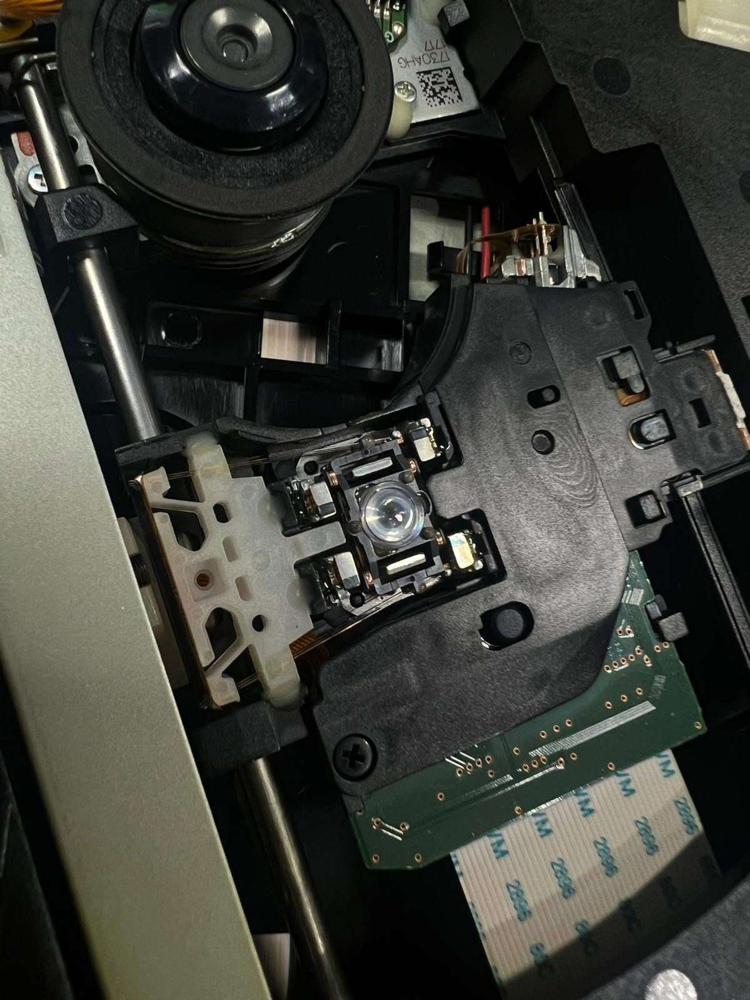
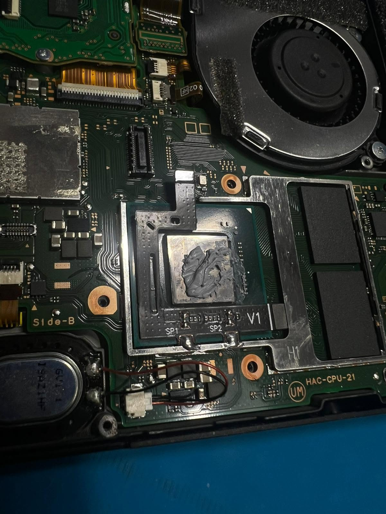
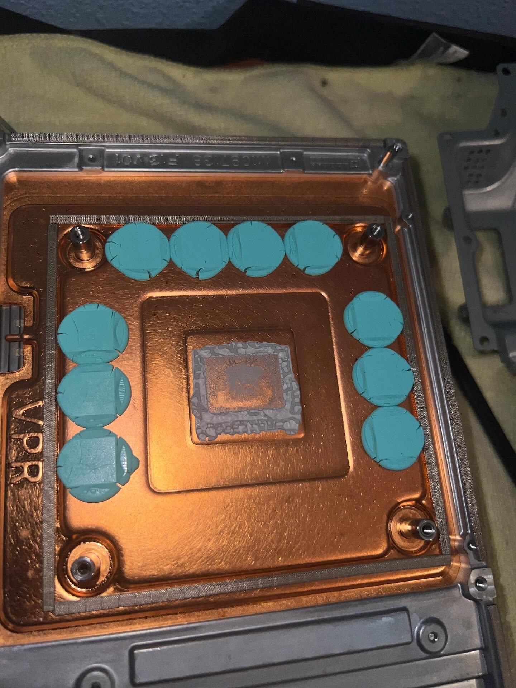
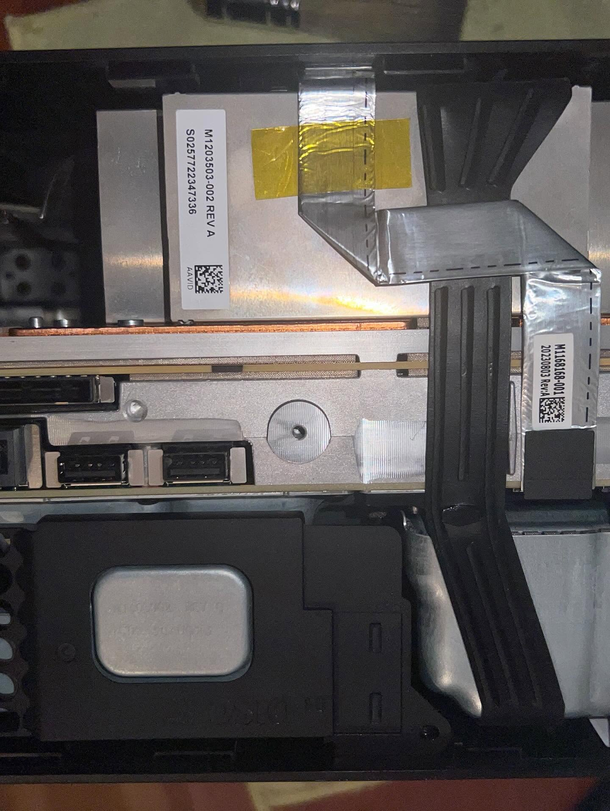
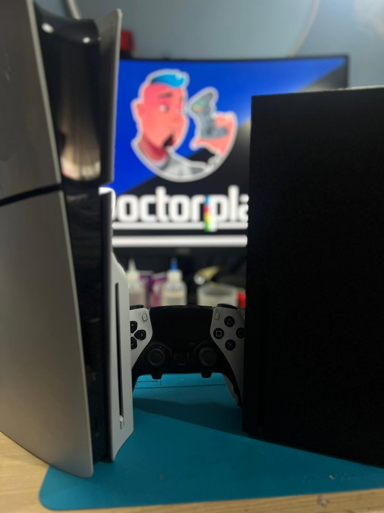
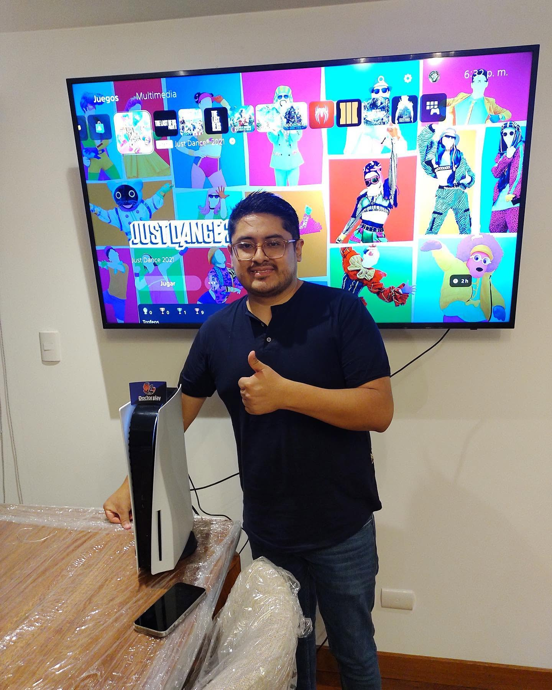

PLAYSTATION / LECTORRECUPERAMOS
RECUPERAMOS
LA PARTIDA.
Revisión del mecanismo, limpieza técnica y prueba completa de funcionamiento.
REPARACIÓN REAL · 001
Así trabajamos por dentro: diagnóstico, precisión electrónica y pruebas reales.

Revisión del mecanismo, limpieza técnica y prueba completa de funcionamiento.
REPARACIÓN REAL · 001
Limpieza y renovación térmica.

Diagnóstico de componentes.

Precisión recuperada.

Probada y con garantía.
Envíanos un mensaje con el modelo y el fallo.
ENVIAR CONSULTA ↗